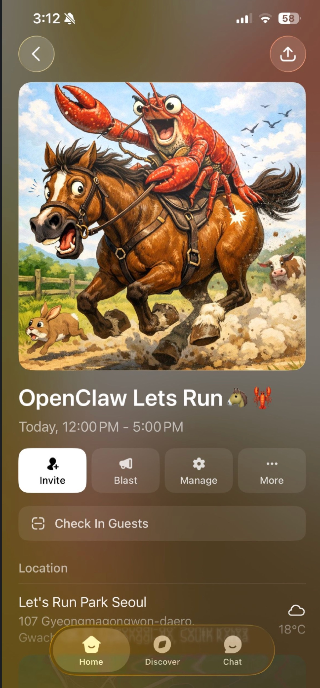
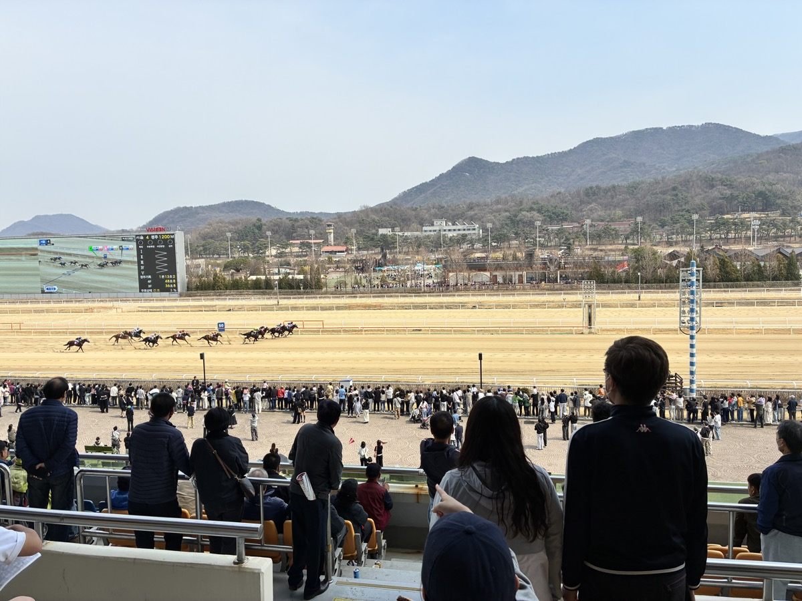
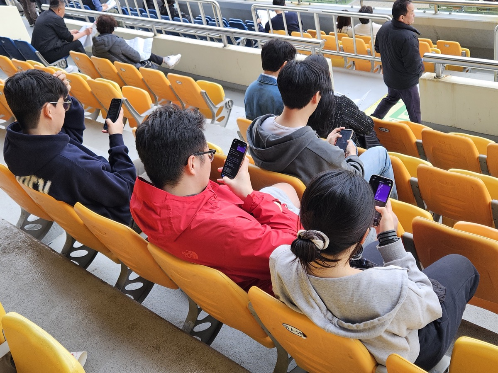
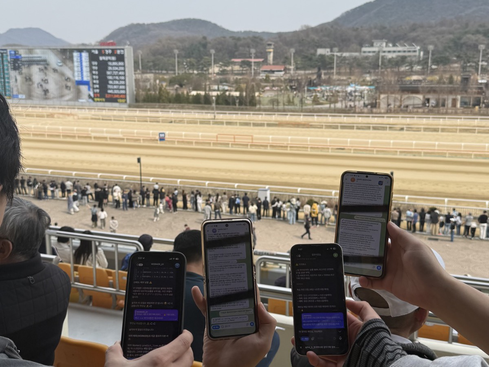

프로젝트 소개
Problem
AI 시대에 개발자가 AI를 도구로 어떻게 활용해야 효율적인 퍼포먼스를 낼 수 있는가?
이 질문에 대한 답을 찾기 위해 해커톤에 참가했습니다. 조건은 단 하나, 노트북 없이 오직 Claude Code(OpenClaw)만으로 개발하는 것이었습니다.
경마 예측 도메인을 선택한 이유는 간단합니다. 빠른 피드백 루프가 가능한 실전 문제이기 때문입니다. 30분마다 경주 결과가 나오고, 즉시 전략을 검증할 수 있습니다.
핵심은 경마가 아니라, AI에게 정확히 지시하고 결과물을 검증하는 개발 프로세스 자체였습니다.
Solution
AI와 협업해서 노코드로 데이터 파이프라인 + 전략 검증 프레임워크를 하루 만에 구축했습니다.
코드를 직접 타이핑하지 않고, AI에게 API 연동, PDF 파싱, 전략 설계를 지시하고 생성된 코드를 검증/수정하는 방식으로 진행했습니다.
TDD 기반 성능 게이트로 AI가 생성한 전략을 검증하고, 실전 결과를 피드백해서 30분 간격으로 전략을 피벗하는 사이클을 3번 돌렸습니다.
GITHUB
팀원 / 역할
1명 (개인 프로젝트)
역할: 문제 정의, 아키텍처 설계, AI 지시 및 코드 검증, 전략 판단
개발 도구: Claude Code (OpenClaw) — 코드 생성, 디버깅, 전략 후보 생성
기술스택
Language & Libraries
Testing & Architecture
Data Source
개발 과정



도전과제
-
AI에게 한국마사회 API 연동, PDF 출전표 파싱, 데이터 정제를 지시하여 정형/비정형 데이터 통합 파이프라인을 구축했습니다. 직접 코드를 타이핑하지 않고, AI가 생성한 코드를 검증하고 수정하는 방식이었습니다.
핵심은 "무엇을 만들어야 하는지 정확히 지시하는 능력"이었습니다. API 엔드포인트(
/raceHorseResult_2)의 응답 구조를 파악하고, PDF 출전표에서 추출해야 할 필드(마번, 마명, 기수, 부담중량, 최근성적)를 명확히 정의한 뒤, AI에게 구현을 지시했습니다.AI가 생성한
pymupdf 파서가 첫 시도에서 테이블 구조를 잘못 파싱하는 문제가 있었습니다. 출력을 직접 확인하고 "행 구분 로직을 좌표 기반으로 변경해달라"고 재지시하여 해결했습니다. AI에게 구체적으로 지시하려면, 결국 도메인과 기술을 이해하고 있어야 합니다.serviceKey 이중 인코딩 이슈도 AI가 먼저 발견하고 unquote()로 해결책을 제시했습니다. 이런 삽질을 줄여주는 게 AI 활용의 실질적 가치였습니다.
# pipeline.py — 수집 → 로드 → 백테스트
collect() # API 호출 → work_dir/horses.json
load_data() # work_dir에서 DataFrame 로드
run_backtest() # fixtures 경주 데이터 + 전략 → 시뮬레이션# config.py — 이중 인코딩 방지
SERVICE_KEY_ENCODED = os.environ.get("KRA_SERVICE_KEY", "...")
SERVICE_KEY = unquote(SERVICE_KEY_ENCODED) # 디코딩 후 사용# PDF 출전표 파싱
import pymupdf
def parse_entry_pdf(pdf_path: str) -> list[dict]:
doc = pymupdf.open(pdf_path)
entries = []
for page in doc:
text = page.get_text()
rows = extract_table_rows(text)
entries.extend(rows)
return entries-
실전 결과를 AI에 피드백 → AI가 원인 분석 → 내가 판단하고 방향 결정 → AI가 구현. 이 사이클을 30분 간격으로 3번 돌렸습니다.
v1 — EV만 믿다가 전멸:
AI에게 "배당 기반 기대값 전략"을 지시했습니다. EV > 1.0인 마필만 선별하는 교과서적 전략이었지만, 실전에서 6레이스 연속 전멸했습니다. 1인기 마필(적중률 40%+)을 EV 필터가 전부 제외했기 때문입니다.
결과를 AI에 피드백하자, "EV 필터가 인기마를 과도하게 제외하고 있다"는 원인 분석이 나왔습니다. 방향 결정은 제가 했습니다: "생존 우선으로 구조를 바꾸자."
v2 — 일단 생존부터:
AI가 보전축(연승) + 보험(연승) + 공격(단승) 3단 구조를 제안했고, 검토 후 구현을 지시했습니다. 전멸에서 부분 회수로 개선됐지만, 단승 적중률 0%로 매 경주 40% 자금이 유실됐습니다.
다시 피드백하자, AI가 "단승 제거 + 연승 집중"을 제안했습니다. 이번엔 제가 추가 방향을 결정했습니다: "배당 확률에만 의존하지 말고, 마필의 실력을 직접 계산하자."
v3 — 근본적 재설계:
AI에게 "승률, 복승률, 기수 능력, 레이팅, 속도지수, 최근 폼, 당일 컨디션을 가중 합산하는 파워 스코어"를 설계하도록 지시했습니다. 가중치 초안은 AI가, 최종 튜닝은 제가 했습니다.
v3 gate(적중률 50% + 수익률 양수) 모두 통과했습니다.
# v1 — EV 기반 전략
# P(i) = (1 / odds_i) / Σ(1 / odds_j)
# EV = P(i) × odds_i → EV > 1.0이면 베팅# v2 — 3단 구조
strategy = {
"보전축": select_yeonseung(top_2, min_odds=1.3), # 연승 — 생존용
"보험": select_yeonseung(top_3), # 연승 — 보험
"공격": select_danseung(ev_top_1), # 단승 — 수익용
}# v3 — 파워 스코어 기반 전략
def power_score(horse: dict) -> float:
return (
horse["win_rate"] * 0.25 + # 승률
horse["place_rate"] * 0.15 + # 복승률
horse["jockey_score"] * 0.20 + # 기수 능력
horse["rating"] * 0.10 + # 공식 레이팅
horse["speed_idx"] * 0.10 + # 속도지수
horse["recent_form"] * 0.10 + # 최근 3경주 폼
horse["condition"] * 0.10 # 당일 컨디션
)
# 최종 스코어 = 실력(50%) + 배당 내재확률(50%)
final = power_score(h) * 0.5 + implied_prob(h) * 0.5-
AI가 만든 코드와 전략을 무조건 믿지 않았습니다. TDD에서 테스트가 코드 품질을 보장하듯, 성능 게이트가 AI 생성 전략의 품질을 보장하는 구조를 설계했습니다.
핵심은 Strategy Pattern으로 전략 인터페이스를 추상화한 것입니다. AI에게 "이 인터페이스를 구현하는 새 전략 클래스를 만들어줘"라고 지시하면, 기존 코드를 건드리지 않고 전략만 찍어낼 수 있습니다. 찍어낸 전략을 파이프라인에 갈아끼우면 바로 동일한 백테스트가 돌아갑니다. AI가 전략을 생성하는 속도와 백테스트로 검증하는 속도가 모두 빨라지니까, "전략 생성 → 갈아끼우기 → 백테스트 → 탈락/승격"을 빠르게 반복할 수 있는 구조가 됩니다.
각 버전의 승격 기준은
pytest로 정의했습니다. gate를 통과해야만 실전에 투입할 수 있고, AI가 아무리 그럴듯한 전략을 만들어도 데이터가 "아니요"라고 하면 승격이 안 됩니다. 아키텍처를 설계하는 건 사람의 역할이고, AI는 그 설계 안에서 전략을 빠르게 구현하는 역할이었습니다. 62개 테스트 전체 통과를 확인했습니다.
# test_strategy_performance.py — 승격 테스트
def test_v1_gate_ev_selection():
"""v1 승격 기준: EV > 1.0 마필 선별 가능"""
bets = EVStrategy().select_bets(seoul_5r, budget=3000)
assert len(bets) > 0 # ✅
def test_v2_gate_hit_rate_improvement():
"""v2 승격 기준: 적중률 25% 이상"""
r2 = backtest(HedgeStrategy(), ALL_RACES, 3000)
assert r2.hit_rate >= 0.25 # ✅
def test_v3_gate_hit_rate():
"""v3 승격 기준: 적중률 50% + 수익률 양수"""
result = backtest(PlaceOnlyStrategy(), ALL_RACES, 3000)
assert result.hit_rate >= 0.5 # ✅
assert result.roi > 0 # ✅
def test_strategy_evolution():
"""전략 진화를 숫자로 증명: v1 < v2 < v3"""
r1 = backtest(EVStrategy(), ALL_RACES, 3000)
r2 = backtest(HedgeStrategy(), ALL_RACES, 3000)
r3 = backtest(PlaceOnlyStrategy(), ALL_RACES, 3000)
assert r1.roi < r2.roi < r3.roi # ✅결과물
백테스트 비교 — 4경주 기준
AI와의 피드백 루프를 3번 돌린 결과입니다.
v1(AI 첫 제안)은 기대값만 쫓다가 6레이스 연속 전멸. 원금의 72.5%가 증발했습니다.
v2(피드백 후 AI 재설계)는 연승 보전축으로 부분 회수에 성공했지만, 단승 적중률 0%로 여전히 마이너스였습니다.
v3(방향 전환 후 AI 구현)은 파워 스코어 기반으로 4경주 전체 적중 + 수익률 양수를 달성했습니다. AI가 만든 전략을 사람이 검증하고 방향을 결정하는 사이클이 유효했습니다.
프로젝트 구조
run_horse/
├── config.py # API 키, 환경 설정
├── pipeline.py # 수집 → 로드 → 백테스트 파이프라인
├── domain/
│ ├── models.py # Horse, Race dataclass (도메인 모델)
│ └── strategies/ # v1(EV), v2(Hedge), v3(PlaceOnly) 전략
├── infra/
│ ├── kra_api.py # 한국마사회 API 수집
│ └── pdf_parser.py # PDF 출전표 파싱
├── tests/
│ ├── fixtures/ # 실전 경주 데이터 (백테스트용)
│ └── test_strategy_performance.py # 62개 테스트
└── work_dir/ # 수집 데이터 캐시 (horses.json)인사이트
배운점
AI에게 좋은 지시를 내리려면, 먼저 문제를 정확히 정의할 수 있어야 합니다
AI에게 "경마 예측 전략 만들어줘"라고 지시하면 교과서적 답변이 나옵니다. "배당 내재확률에서 EV > 1.0인 마필을 선별하되, 켈리 기준으로 베팅 비율을 산출하는 전략을 Strategy Pattern으로 구현해줘"라고 지시하면 바로 쓸 수 있는 코드가 나옵니다. 결국 AI의 출력 품질은 입력의 정밀도에 비례한다는 걸 체감했습니다.
노코드로 개발하더라도, 설계 역량이 결과물의 품질을 결정합니다
코드를 직접 타이핑하지 않았지만, Strategy Pattern, Domain/Infra 분리, 성능 게이트 같은 아키텍처 의사결정은 전부 사람이 했습니다. AI가 구현 속도를 올려줄수록 설계 역량의 차이가 결과물의 품질 차이로 직결된다는 걸 느꼈습니다.
AI와의 피드백 루프가 이터레이션 속도를 극적으로 올려줍니다
실전 결과 → AI 피드백 → 원인 분석 → 방향 결정 → AI 구현. 이 사이클을 30분 간격으로 3번 돌려서 전략을 전멸(v1)에서 수익(v3)까지 올렸습니다. AI 없이 같은 사이클을 돌리면 하루가 아니라 일주일이 필요했을 겁니다. AI는 "대신 개발해주는 것"이 아니라 "이터레이션 속도를 올려주는 도구"였습니다.
성능 게이트 기반 품질 관리
AI가 생성한 전략을 무조건 신뢰하지 않고, 백테스트 성능 게이트로 검증하는 구조를 설계했습니다. 기준을 점진적으로 높여가며 전략을 개선하는 사이클이, AI 생성 코드를 프로덕션에 반영할 때도 동일하게 적용될 수 있다는 걸 깨달았습니다.
아쉬운점
백테스트 데이터의 한계
4경주 분량의 실전 데이터로 검증한 결과라 통계적 유의성이 부족합니다. 최소 100경주 이상의 데이터로 백테스트해야 전략의 신뢰도를 확보할 수 있을 것 같습니다. 실전에서는 데이터 양이 모델의 신뢰도를 결정한다는 당연한 사실을 다시 체감했습니다.
AI 지시의 체계적 버전 관리 부재
전략은 v1 → v2 → v3으로 버전 관리했지만, AI에게 내린 지시(프롬프트) 자체는 체계적으로 기록하지 못했습니다. 어떤 지시가 좋은 코드를 만들었고, 어떤 지시가 잘못된 방향을 유도했는지 사후 분석이 어려웠습니다. 프롬프트를 코드처럼 버전 관리하고, 지시 → 결과물 → 검증 결과를 하나의 트레이스로 남겼다면, AI 협업 프로세스 자체를 반복 가능한 프레임워크로 만들 수 있었을 것 같습니다.
AI 생성 코드의 품질 검증 체계 미흡
AI가 생성한 코드를 리뷰하는 체계가 부족했습니다. 성능 게이트로 전략의 결과는 검증했지만, 코드 자체의 품질(엣지 케이스 처리, 에러 핸들링)은 충분히 검토하지 못했습니다. 테스트는 있었지만, AI가 만든 테스트의 커버리지를 검증하는 메타 테스트는 없었습니다. AI 생성 코드를 프로덕션에 반영하려면, 코드 리뷰 체계와 테스트 커버리지 검증이 필수라는 걸 느꼈습니다.